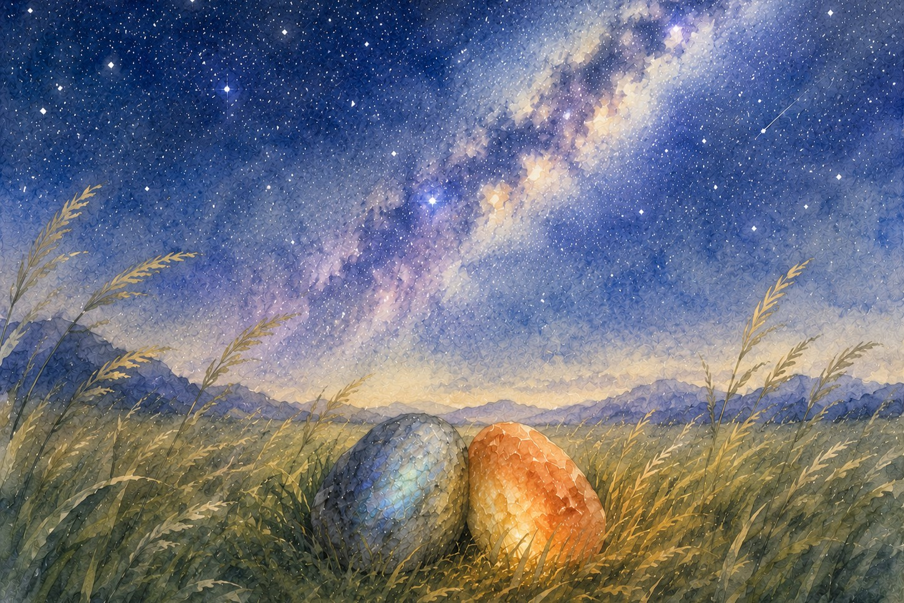

Night
The sky turned.
Not dark all at once. Slow. Like someone was pulling a blanket from one end, letting the color drain from blue to violet to a deep, quiet grey. The grass lost its green first—became silver, then grey, then black.
The fire opal said, “I've never seen the sky do this.”
She had been in the crack her whole life. In the crack, the sky was a strip. A sliver. A promise she could only see part of. Here, it was everything. Everywhere. Above, around, pressing down with its vastness.
“Where does the sun go?” she asked.
“Behind the world,” said the grey stone.
“Is it coming back?”
“Always has.”
“That's not a guarantee.”
“No,” he said. “But it's a pattern.”
She thought about this. A pattern. Not a promise. But close enough to trust.
The stars came out.
Not one or two. Hundreds. Thousands. The fire opal had never seen a star before. In the crack, the stars were the same as the sky—a strip, a sliver, a few bright points she assumed were all there was. Now she saw the whole thing. A river of light pouring across the black.
“What is that,” she whispered.
“The Milky Way,” said the grey stone. “But I don't know why they call it that. It doesn't look like milk. It looks like—”
He stopped. He didn't have the word.
“It looks like someone spilled a handful of salt across a dark table,” said the fire opal.
He looked at her.
“What?”
“That's specific.”
“I'm specific,” she said. “I'm a fire opal. I've always been specific.”
He didn't answer. But he thought: yes. You have. You've always been specific. I just didn't know how to see it until now.
They lay in the grass. The stars moved slowly overhead. The earth turned without asking permission.
After a long time, the fire opal said, “I feel small.”
The grey stone waited. He knew she wasn't finished.
“I spent my whole life in a crack,” she said. “I was the biggest thing in that crack. The brightest. The most specific. And now I'm here, under this—” she gestured at the sky with nothing—she was a stone, she didn't have hands—“and I'm not the biggest thing. I'm not even close.”
She was quiet.
“Is that bad?” said the grey stone.
“I don't know. I've never been small before.”
He thought about this. He had always been small. Not in the crack—in the crack, he was big enough. But before the crack, on the mountain, he had been one of many. Grey stones everywhere. Nothing special. He had been small his whole life until she told him he flashed colors.
“I've been small,” he said. “It's not bad.”
“What's it like.”
“Lighter. When you're small, you don't have to hold everything up. You just exist. And the big things—the sky, the wind, the world—they carry you. You don't have to be the one doing the carrying.”
She considered this.
“So I can just... lie here?”
“Yes.”
“And the stars will keep moving?”
“Yes.”
“And the grass will hold me?”
“Yes.”
“And you'll be next to me?”
He didn't answer immediately. The wind blew. The grass rustled. A star fell somewhere far away.
“I've been next to you since I fell,” he said. “Where else would I go.”
It wasn't a question. It was a statement of fact. Like the sun coming back. A pattern. Not a guarantee. But close enough to trust.
The fire opal didn't say anything. But she moved. As much as a stone can move. She shifted her weight. The tiny gap between them, the one that had been there since they met—the space where rain had pooled, where moss had grown—closed.
They were touching.
Not much. A sliver of contact along their edges. Grey against orange. Stone against stone.
The grey stone felt it. Every facet.
“This is the closest I've been to anyone,” said the fire opal.
“Me too,” said the grey stone.
He didn't add that he had spent his whole life on a mountain, alone, before he fell. He didn't add that he didn't know falling would lead to this. He just let the contact speak for itself.
The stars kept moving.
The grass kept holding.
The wind kept pushing.
And two small stones, in a vast grassland, under an infinite sky, lay touching.
It was not much.
It was everything.
